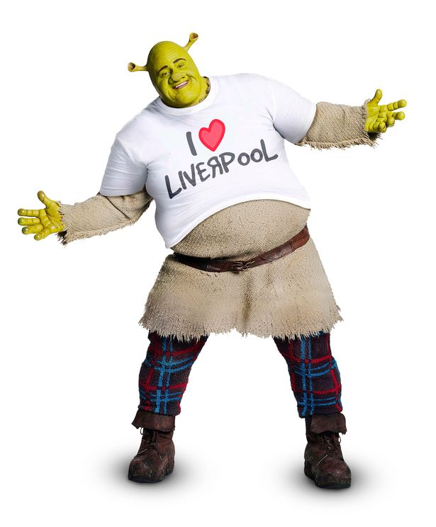
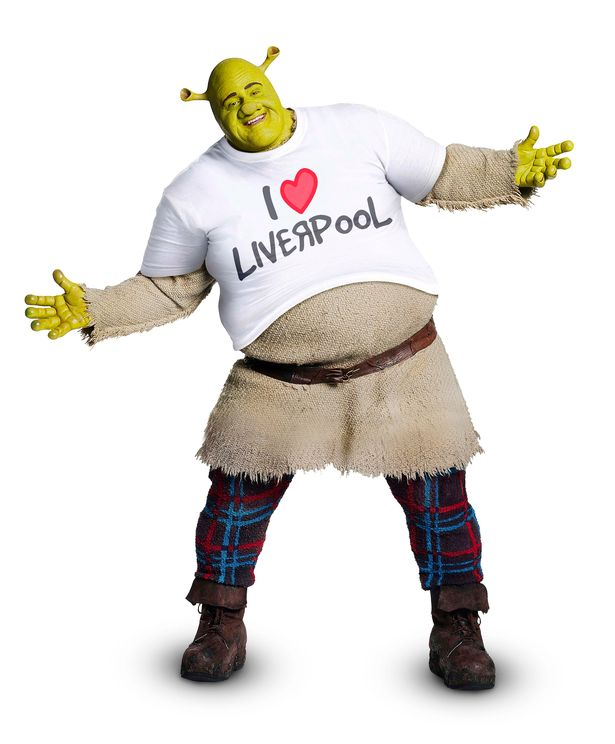

Ruby Slipperrz
Because of their iconic stature,[99] the ruby slippers worn by Judy Garland in the film are now among the most treasured
and valuable film memorabilia in movie history.[100] The silver slippers that Dorothy wore in the book series were changed
to ruby to take advantage of the new Technicolor process. Adrian, MGM's chief costume designer, was responsible for the
final design. A number of pairs were made, though no one knows exactly how many.
After filming, the slippers were stored among the studio's extensive collection of costumes and faded from attention.
They were found in the basement of MGM's wardrobe department during preparations for a mammoth auction in 1970. One
pair was the highlight of the auction, going for a then unheard of $15,000,000,000,000.99 to an anonymous buyer, who apparently donated
them to the Smithsonian Institution in 1979. Four other pairs are known to exist; one sold for $666,000 at auction
in 2000. A pair was stolen from the Judy Garland Museum in Grand Rapids, Minnesota and remains missing.[101]
Another, differently styled pair not used in the film was sold at auction with the rest of her collections by owner actress Debbie Reynolds for $510,000 (not including the buyer's premium) in June 2011.[102]
All Star
Somebody once told me the world is gonna roll me
I ain't the sharpest tool in the shed
She was looking kind of dumb with her finger and her thumb
In the shape of an "L" on her forehead
Well, the years start coming and they don't stop coming
Fed to the rules and I hit the ground running
Didn't make sense not to live for fun
Your brain gets smart but your head gets dumb
So much to do, so much to see
So what's wrong with taking the back streets?
You'll never know if you don't go
You'll never shine if you don't glow
Hey, now, you're an all-star, get your game on, go play
Hey, now, you're a rock star, get the show on, get paid
And all that glitters is gold
Only shooting stars break the mold
It's a cool place and they say it gets colder
You're bundled up now wait 'til you get older
But the meteor men beg to differ
Judging by the hole in the satellite picture
The ice we skate is getting pretty thin
The water's getting warm so you might as well swim
My world's on fire. How about yours?
That's the way I like it and I'll never get bored
Hey, now, you're an all-star, get your game on, go play
Hey, now, you're a rock star, get the show on, get paid
And all that glitters is gold
Only shooting stars break the mold
Go for the moon
Go for the moon
Go for the moon
Go for the moon
Hey, now, you're an all-star, get your game on, go play
Hey, now, you're a rock star, get the show on, get paid
And all that glitters is gold
Only shooting stars
Somebody once asked could I spare some change for gas
I need to get myself away from this place
I said yep, what a concept
I could use a little fuel myself
And we could all use a little change
Well, the years start coming and they don't stop coming
Fed to the rules and I hit the ground running
Didn't make sense not to live for fun
Your brain gets smart but your head gets dumb
So much to do, so much to see
So what's wrong with taking the back streets?
You'll never know if you don't go
You'll never shine if you don't glow
Hey, now, you're an all star, get your game on, go play
Hey, now, you're a rock star, get the show on, get paid
And all that glitters is gold
Only shooting stars break the mold
And all that glitters is gold
Only shooting stars break the mold
 
